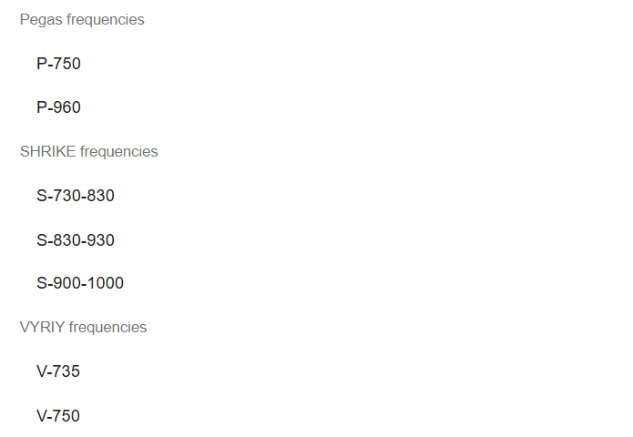
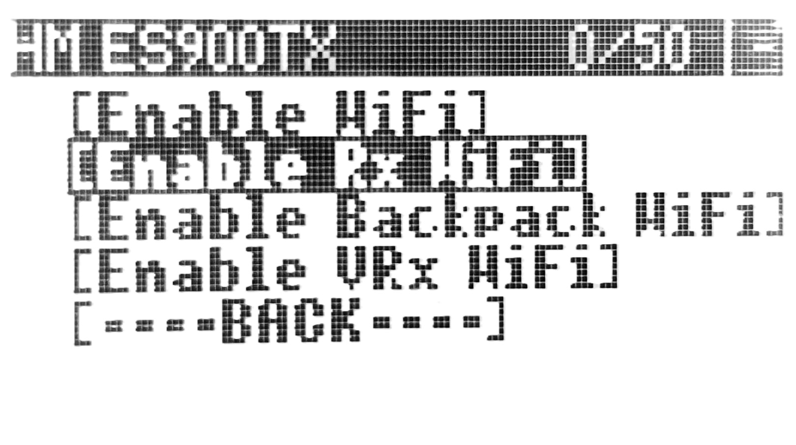
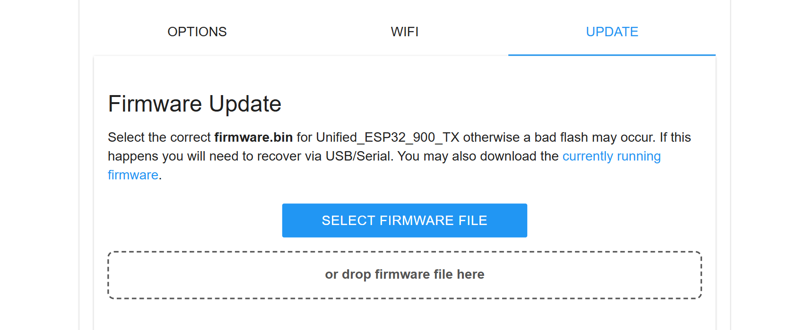
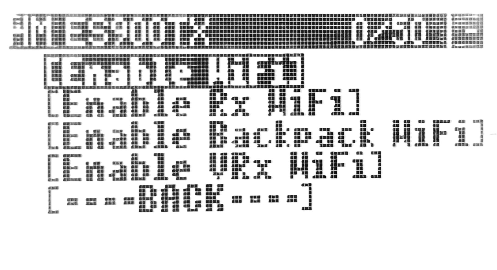
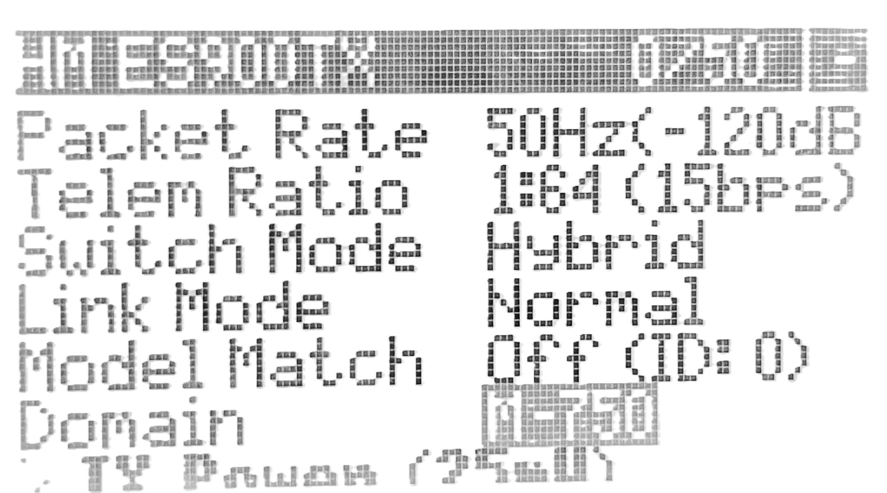
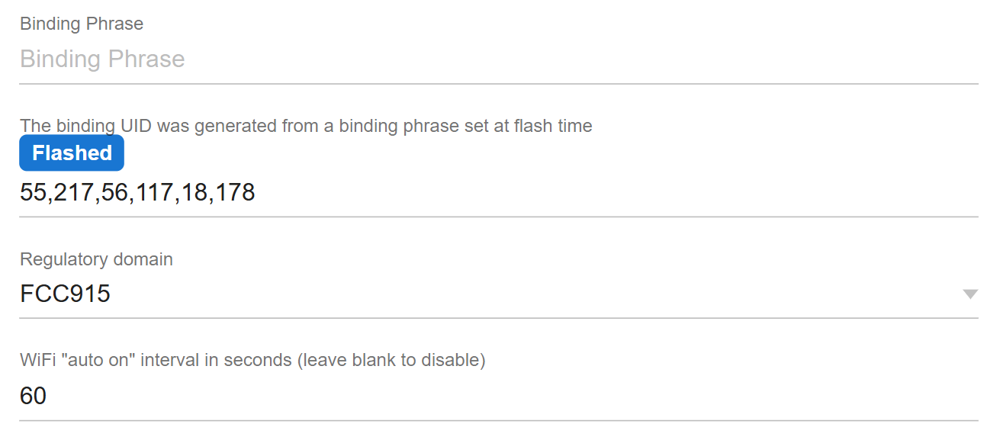

Довідка MafiaLRS
Увага! В цій прошивці змінено тільки діапазони частот і додані деякі зручності. Якщо вам потрібні додаткові елементи безпеки, то користуйтеся спеціалізованими прошивками. Наприклад Barvinok-5.
Навігація
- Історія оновлень
- Особливості прошивки
- Прошивка RX
- Прошивка TX
- Вибір частоти TX/RX через LUA
- Вибір частоти RX через Wifi
- Вибір частоти TX через Wifi
Історія оновлень
Версія 1.2.2
- Внесені зміни які оптимізують веб-інтерфейс для старих MCU (ESP8285). Має помітно прискоритися завантаження сторінки, особливо на приймачах зі звʼязкою ESP8285+LR1121, таких як Dbr1.
Версія 1.2.1
- Backpack Pro відключено за замовчуванням, щоб виключити проблеми з довільним перемиканням каналів у тих, хто ним не користується
Версія 1.2
- Додалась підтримка нестандартних частот для 2.4 діапазону, зміна частоти працює так само - як через вайфай так і через LUA з синхронізацією з приймачем
- Додано Backpack Pro (дякую Akceptor). Він дозволяє перемикати бенди/канали відео через бекпек за допомогою обраного AUX, включаючи Х-бенд. Налаштовується через LUA
Версія 1.1
- Прошивка тепер базується на версії ELRS 3.5.3
- Частоти Pegas винесені в окремий блок
- Додано частоти VYRIY
- Додано можливість переключати частоту через LUA на апаратурі. При цьому зміна частоти на TX синхронізується з RX (дякую розробнику прошивки Bandera ELRS за допомогу з реалізацією цієї функції)
Особливості прошивки
Основними особливостями цієї прошивки є:
- Підтримка нестандартних діапазонів частот
- M-433
- M-485
- M-500
- M-730
- M-750
- M-780
- M-800
- M-830
- M-960
- M-1000
- M-2.1
- M-2.2
- M-2.3
- M-2.5
- M-2.6
- Вибір частоти через Wifi – немає необхідності перепрошивати TX/RX для зміни частоти
- Вибір частоти через LUA скрипт ExpressLRS на апаратурі
- Автоматична синхронізація зміни частоти між TX і RX — змінивши частоту через LUA, приймач сам переключиться на неї
- Підтримка діапазонів частот які використовуються деякими виробниками FPV дронів. Наприклад, якщо ви використовуєте дрони від SHRIKE, то немає необхідності прошивати TX їх прошивкою, ви можете обрати сумісні діапазони через Wifi або LUA. Перелік виробників буде доповнюватися з часом. 
- Підтримка стандартних діапазонів частот, наприклад FCC915. Залишається можливість працювати з не модифікованими приймачами.
- Підтримка Backpack Pro від Akceptor, для швидкої і зручної зміни відео-каналів з сінхронізацією з окулярами.
Прошивка RX
- Переведіть приймач в режим Wifi точки доступа
- Якщо приймач підключено до TX, то TOOLS > ExpressLRS > WiFi Connectivity > Enable Rx WiFi 
- Якщо приймач не підключено до TX, то утримуйте кнопку на приймачі до моменту поки діод не почне швидко блимати
- Або почекайте 1 хвилину поки приймач перейде в режим Wifi точки доступу
- Підключіться до Wifi мережі ExpressLRS RX (пароль expresslrs)
- Якщо сторінка з налаштуваннями не відкрилася автоматично після підключення, то відкрийте браузер і в адресну строку введіть 10.0.0.1
- Перейдіть на вкладку Update 
- Скачайте резервну копію прошивки по посиланню
- Завантажте файл прошивки якій відповідає моделі вашого передавача
Прошивка TX
- Переведіть передавач в режим Wifi точки доступа
- TOOLS > ExpressLRS > WiFi Connectivity > Enable WiFi 
- Підключіться до Wifi мережі ExpressLRS TX (пароль expresslrs)
- Якщо сторінка з налаштуваннями не відкрилася автоматично після підключення, то відкрийте браузер і в адресну строку введіть 10.0.0.1
- Перейдіть у вкладку Update
- Скачайте резервну копію прошивки по посиланню
- Завантажте файл прошивки якій відповідає моделі вашого передавача
Вибір частоти TX/RX через LUA
- На TX Відкрийте LUA-скрипт ExpressLRS (TOOLS > ExpressLRS)
- Прокрутіть головне меню скрипта до пункту "Domain" 
- Активуйте пункт і оберіть потрібну частоту
- Після підтвердження передавач відразу переключиться на неї
- Якщо в цей момент підключено приймач, то він автоматично перемкнеться на ту саму частоту (це займає 10-20 секунд, не раджу робити в польоті)
Вибір частоти RX через Wifi
- Переведіть приймач в режим Wifi точки доступа
- Якщо приймач підключено до TX, то TOOLS > ExpressLRS > WiFi Connectivity > Enable Rx WiFi
- Якщо приймач не підключено до TX, то утримуйте кнопку на приймачі до моменту поки діод не почне швидко блимати
- Або почекайте 1 хвилину поки приймач перейде в режим Wifi точки доступу
- Підключіться до Wifi мережі ExpressLRS RX (пароль expresslrs)
- Якщо сторінка з налаштуваннями не відкрилася автоматично після підключення, то відкрийте браузер і в адресну строку введіть 10.0.0.1
- Перейдіть на вкладку Options 
- В селекторі “Regulatory domain” виберіть потрібний діапазон частот
Вибір частоти TX через Wifi
- Переведіть передавач в режим Wifi точки доступа
- TOOLS > ExpressLRS > WiFi Connectivity > Enable WiFi
- Підключіться до Wifi мережі ExpressLRS TX (пароль expresslrs)
- Якщо сторінка з налаштуваннями не відкрилася автоматично після підключення, то відкрийте браузер і в адресну строку введіть 10.0.0.1
- В селекторі “Regulatory domain” виберіть потрібний діапазон частот